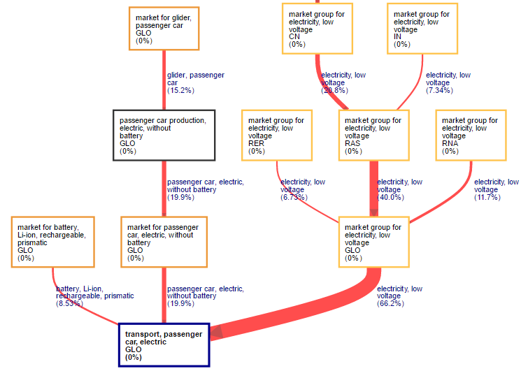

Welcome to the Activity Browser !The Activity Browser is an open source graphical user interface designed to increase the productivity when working with the Brightway2 advanced life cycle assessment framework. |
LCA results overview |
Monte Carlo simulation |
Sankey diagrams |
|---|---|---|
 |
 |
 |